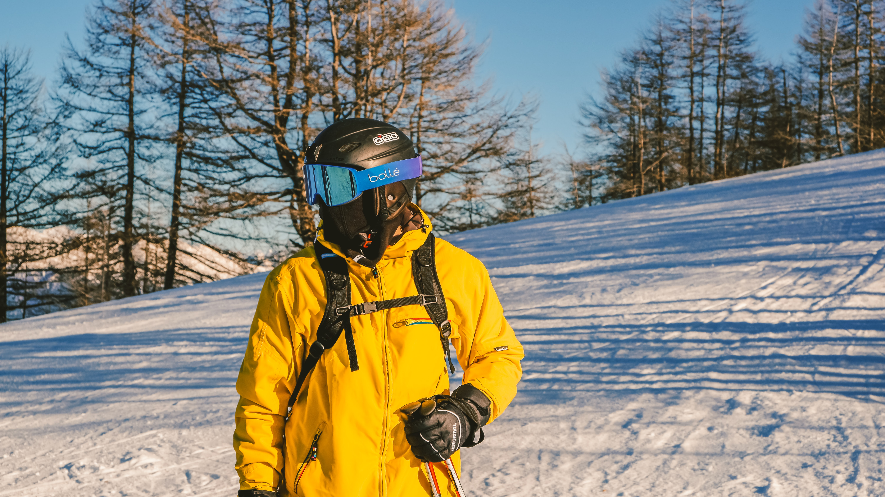
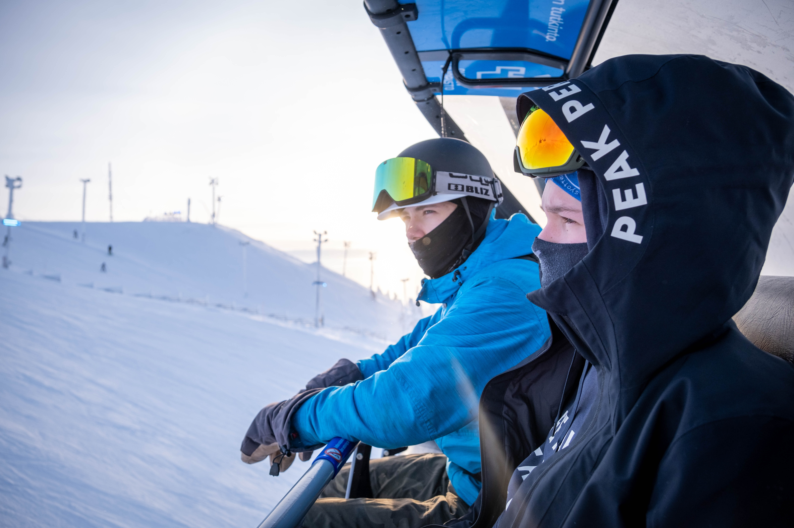
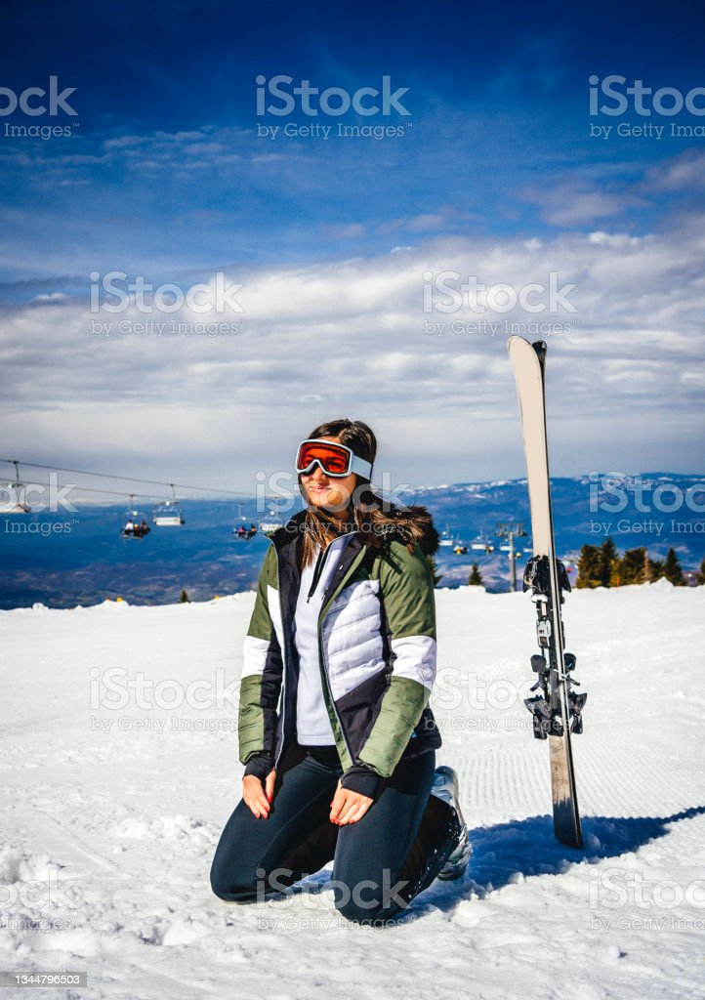

Het belangrijkste is natuurlijk ski's.
Om in je skischoenen te klikken heb je skischoenen nodig. Het zijn niet de meest comfortabele schoenen maar het zorgt voor stevigheid en een juiste houding tijdens het skieën.
Skistokken zijn niet noodzakelijk vooral niet als je net begint, maar het zorgt voor een goede balans, het helpt om ritme te houden en de hoog-laag bewegingen gaan ook makkelijker met stokken.
Tijdens het skienen is het natuurlijk niet heel warm dus het is lekker om onder je helm een dunne hoofdband te dragen. Een buff zou ook kunnen.
Ook iets wat echt heel belangrijk is is je helm. Een ongeluk zit in een klein hoekje vooral op de piste. Jij kan wel rekening houden met iedereen maar je weet niet of iedereen dat ook doet bij jou. Een bril erbij is ook fijn, als je zon schijnt weerkaatst het op de sneeuw en is het dus dubbel zo fel.
Om het lekker warm te hebben draag je met skieen veel lagen meestal zowiso meer dan 2. Je doet eerst je termo kleding, daarna eventueel een truiof een overbroek. Als laatste laag doe je dan je ski jas en broek.
Een musthave zijn echt je handschoenen, anders vriezen je handen echt af.
Ook dit is weer zodat je het lekker warm hebt. In de skischoenen kan je nouwelijks je tenen bewegen dus die worden echt heel koud